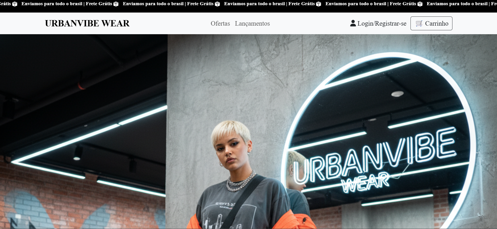
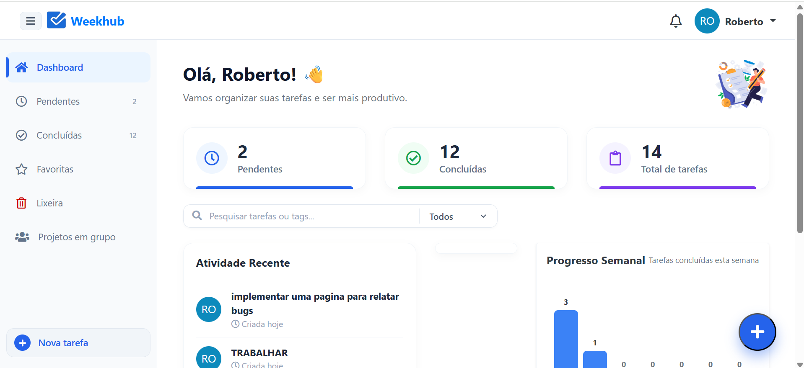
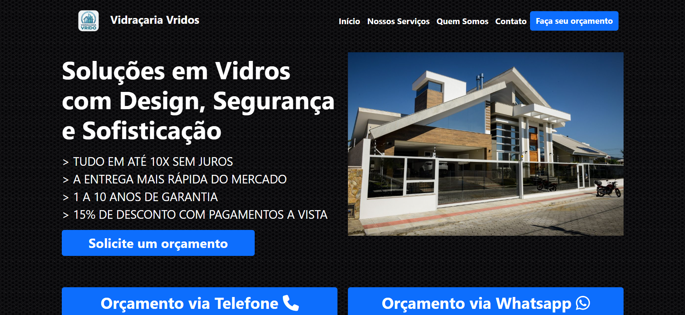
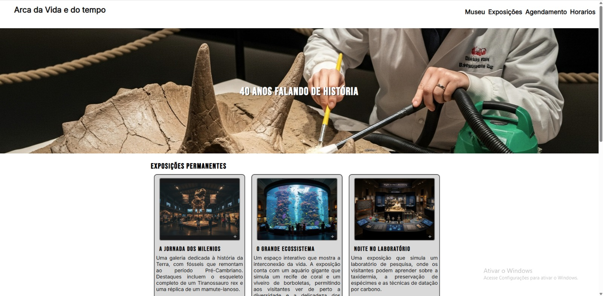
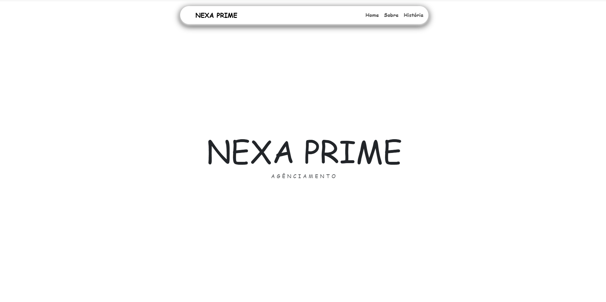

.png)
Projeto Adimo Imóveis
O projeto é um case universitário para desenvolver um projeto de uma imobiliária
ficticia, este é
o
projeto.
html 5
css
javascript
bootstrap
Saiba
mais

UrbanVibe Wear
Estudo de case desenvolvido para a UrbanVibe Wear, marca especializada em moda streetwear e tendências urbanas. O projeto apresenta estratégias para curadoria de coleções, experiência de compra omnichannel, gestão de estoque, logística de entrega e engajamento de comunidade, com foco em autenticidade, agilidade e conexão com o público. A proposta demonstra habilidades em planejamento de marca, estruturação de processos de e-commerce e criação de soluções modernas voltadas ao setor de varejo de moda, unindo estilo, identidade e inovação tecnológica.
html 5
css
javascript
Bootstrap
SUPABASE
Saiba
mais

Weekhub
Um projeto visando melhorar a organização dos usuários em torno de uma plataforma de gerenciamento de tarefas e colaboração.
html 5
css
javascript
Bootstrap
MYSQL
Saiba
mais
.png)
Projeto Byte Minds
O projeto é um case universitário de uma loja virtual, funciona com integração a um banco
de dados
AWS.
html 5
css
javascript
bootstrap
mysql
aws
node.js
Saiba
mais

VIDRAÇARIA VRIDOS
Estudo de caso desenvolvido para a Vidraçaria Vidros, empresa especializada em soluções
em vidro para residências e comércios. O projeto apresenta estratégias para organização de
serviços, atendimento ao cliente, solicitação de orçamentos, agendamentos e gerenciamento de
projetos, com foco em eficiência, qualidade e experiência do cliente. A proposta demonstra
habilidades em planejamento, estruturação de processos e criação de soluções modernas voltadas
ao setor vidreiro, unindo design, segurança e inovação.
html 5
css
Bootstrap
JavaScript
Saiba
mais

Silva & Associados Advocacia
Um case de estudo Advocacional de uma empresa chamada Silva & Associados.
html 5
css
Saiba
mais

Arca da Vida e do tempo - museum
Um case de estudo de um museu ficticio chamado Arca da Vida e do tempo, possuí programas
de
exposições, a linha
do tempo, agendamentos e horários.
html 5
css
Saiba
mais

NEXA PRIME
Estudo de caso desenvolvido para a NEXA PRIME Agenciamento, uma empresa focada em gestão
de talentos
e oportunidades profissionais. O projeto apresenta soluções estratégicas para organização de
perfis,
divulgação de oportunidades, agendamentos e gerenciamento de eventos e seleções, com foco em
eficiência, experiência do usuário e inovação digital. A proposta demonstra habilidades em
planejamento, estruturação de sistemas e criação de plataformas modernas voltadas ao mercado de
agenciamento e recrutamento.
html 5
css
Bootstrap
JavaScript
Saiba
mais